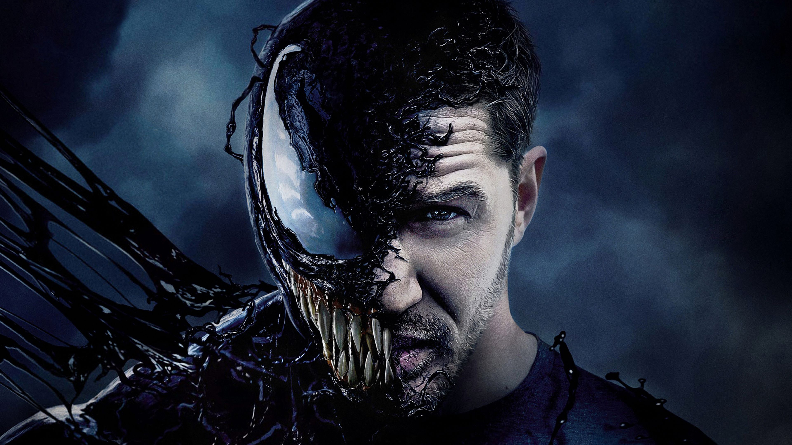
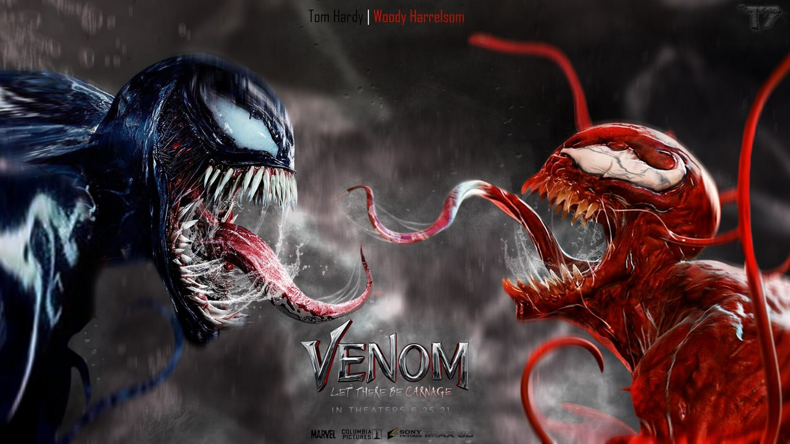

Sejarah
Venom atau Venom Symbiote adalah tokoh anti-hero yang muncul dalam
komik-komik terbitan Marvel Comics. Ia pertama kali muncul pada
komik The Amazing Spider-Man #299 (April 1988) dan dibuat oleh
penulis David Michelinie dan seniman Todd McFarlane. Di dalam komik
tersebut, ia ditampilkan sebagai salah satu musuh baru Spider-Man
walaupun dalam penampilannya selanjutnya, ia beberapa kali bekerja
sama dengan Spider-Man. Venom sering dianggap sebagai "sisi gelap"
dari Spider-Man karena kepribadiannya yang keras dan penampilan
serta kekuatannya yang mirip dengan Spider-Man.
Kekuatan
Venom mendapatkan semua kekuatan dari symbiotenya. Karena symbiote
itu pernah menempel kepada Spider-Man dan menyerap informasi genetis
dari setiap inangnya, Venom memiliki aneka kemampuan yang sebelumnya
hanya dimiliki oleh Spider-Man seperti menempel dan bergerak di
dinding, kekuatan dan kelincahan melebihi manusia biasa, serta
kemampuan menghasilkan jaring. Jaring yang dihasilkan Venom mirip
dengan yang dihasilkan Spider-Man, tetapi jaring tersebut keluar
dari punggung telapak tangannya, bukan dari bawah pergelangan tangan
seperti milik Spider-Man. Namun,jaring yang dihasilkan juga bisa
lebih kuat karena jaring itu dibuat oleh symbiote yang menempel pada
dirinya. Hal menariklainnya, symbiote milik Venom juga membuatnya
kebal terhadap "indra laba-laba" milik Spider-Man. Secara
keseluruhan, Venom tidak selincah Spider-Man, tetapi lebih kuat
karena secara fisik.
Komik
Venom atau Venom Symbiote adalah tokoh anti-hero yang muncul dalam
komik-komik terbitan Marvel Comics. Ia pertama kali muncul pada
komik The Amazing Spider-Man #299 (April 1988) dan dibuat oleh
penulis David Michelinie dan seniman Todd McFarlane. Di dalam komik
tersebut, ia ditampilkan sebagai salah satu musuh baru Spider-Man
walaupun dalam penampilannya selanjutnya, ia beberapa kali bekerja
sama dengan Spider-Man. Venom sering dianggap sebagai "sisi gelap"
dari Spider-Man karena kepribadiannya yang keras dan penampilan
serta kekuatannya yang mirip dengan Spider-Man.
Film
Awal kemunculan Venom di layar lebar tepatnya pada film Spiderman 3
yang rilis tahun 2007. Kemunculan Venom di film ini sendiri
diceritakan berbeda dengan film Venom 2018. Akan tetapi, saat ini
Venom sudah punya film spin off nya sendiri, bahkan untuk seri yang
keduanya akan tayang dalam waktu dekat.
Venom (2018)

Venom 2018 merupakan film untuk spin off Venom yang dibintangi
oleh Tom Hardy sebagai Eddie Brock/Venom, Michelle Williams
sebagai Anne Weying, Riz Ahmed sebagai Carlton Drake/Riot (Red
Symbiote), Reid Scott sebagai Dr. Dan Lewis, Jenny Slate sebagai
Dr. Dora Skirth, dan masih banyak cast lainnya. Di film ini juga,
diceritakan awal pertemuan Eddie Brock dengan Venom yang merupakan
symbiote yang hendak menginvasi bumi.
Villain yang dihadapi Venom di film ini ada Riot (Red Symbiote)
yang merupakan pimpinan kelompoknya sendiri saat akan menginvasi
bumi. Namun setelah pertemuannya dengan Eddie Brock, Venom memilih
untuk menetap di bumi dan melindunginya dari ancaman Riot.
Pertarungan keduanya pun tak terelakan, yang dimana Venom lah yang
berhasil menang dan mencegah Riot menggunakan roket Carlton Drake
kembali ke planet asalnya guna membawa lebih banyak symbiote
lainnya untuk menaklukkan bumi.
Venom : Let there be carnage

Venom : Let There Be Carnage merupakan film spin off kedua dari
Venom yang akan segara rilis dalam waktu dekat. Di film kedua ini,
menghadirkan karakter yang telah dinanti-nanti para fans yaitu
Cletus Casady atau yang lebih dikenal sebagai Carnage. Diperankan
oleh Woody Harrelson, karakter Carnage yang seorang psikopat
pembunuh, akan menjadi symbiote lainnya dalam film ini. Belum
terlalu mengenal sosoknya? Berikut beberapa informasi tentang
Carnage yang telah diketahui :
Asal Kebrutalan Carnage
Cletus Kasady atau Carnage memiliki masa kecil yang penuh dengan
kekerasan, pembunuhan, penyiksaan, dan perilaku antisosial. Dalam
gambaran komik Marvel, Kasady memperlihatkan bagaimana dia
membunuh neneknya sendiri sejak masih kecil. Bahkan setelah
kematian orangtuanya, Kasady yang dikirim ke panti asuhan justru
semakin terasah insting membunuhnya. Bagi Kasady, itu hanya awal
dari perjalanan panjang atas kesenangannya untuk membunuh dengan
brutal, yang akhirnya mengirim dia ke penjara Pulau Ryker. Di
pulau itulah ia kali pertama bertemu dengan Eddie Brock, teman
satu sel-nya dan mantan tempat tinggal simbiote Venom.
Hubungan dengan Venom
Dipenjara setelah bertarung dengan Spider-Man dan sejumlah
penjahat, Eddie Brock percaya simbiote Venom mati. Ia kemudian
menemukan dirinya berada satu sel dengan Kasady, orang yang
dibencinya karena hobi Kasady membunuh orang tak bersalah, sesuatu
yang Brock coba untuk tidak pernah ia lakukan sebagai Venom.
Namun, ketika simbiote Venom hidup dan menemukan cara kembali ke
Brock (Brock dan Venom bersatu lagi), hasil dari pelarian diri
mereka meninggalkan simbiote kecil, yang sebenarnya itu adalah
anak dari simbiote.